화학공정계산 (murphy) 4장:반응기
4장:반응기 흐름도 작성과 반응기 공정 조건들의 선택
화학반응 선택을 위한 발견적 학습법
1.생성물 내에 반응물 원자들이 많이 포함되도록 한다.
2.위험도가 적은 것을 택한다.
3.원료는 고순도로 택한다.
4.반응단계를 짧은 것으로 정한다.
5.가능하면 촉매를 써라
6.요구되는 온도와 압력이 상온과 같은게 좋다.
반응기 설계 변수
P, T, V, 체류시간, 반응물 공급비, 반응기의 종류, 촉매
반응기 흐름 조성과 시스템 성능 규격
이론적으로는 반응기는 부반응이 없고 100%전환된다. 그러나 실제로는 부반응이 생기며, 전환이 100%되지 않는다.
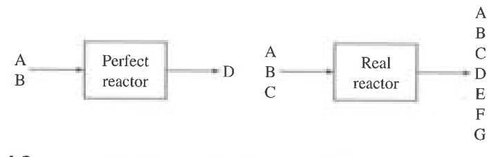
왼쪽과 오른쪽의 자유도를 비교해보자.
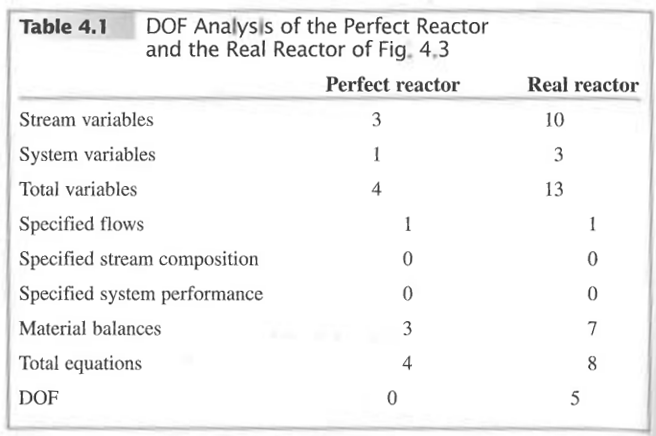
이론적인 반응기는 규정이 되지만 실제 반응기는 아직 모르는 변수가 많다. 이는 선택도, 전화율, 수율을 규정지어 DOF값을 0으로 만들 수 있다.
선택도
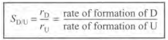
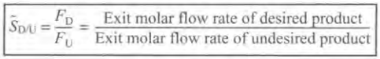
수율:
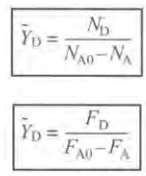
총괄 수율은 반응한 물질 몰 수 대비 생성된 몰 수
전화율 X는 이미 정의했다.
만약 전화율이 낮으면 순환을 시켜 총괄 전화율을 높일 수 있다. 또 불순물이 있으면 퍼지를 통해 제거할 수 있으며 퍼지로 내보내는 불순물은 들어오는 양하고 똑같아야 한다.
반응기는 왜 완전하지 못한가? 화학평형과 반응속도
평형에 의해 반응이 100%진행되지 않기 때문이다. 평형을 나타내는 지표는 평형상수 Ka.
다음 반응에서 평형상수는 다음과 같다.
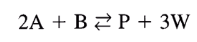
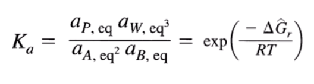 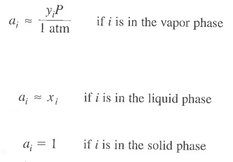
다음은 온도와 평형상수의 관계이다.

이를 그래프로 나타내면 원하는 평형 정도를 맞추기 위한 온도를 선택할 수 있을 것이다.
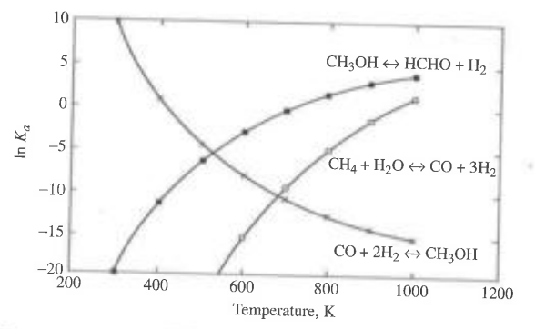
경험법칙에 의해 Ka가 1 이상인 반응경로를 선정하는 게 권장된다. 일반적으로 온도는 올라갈 수록 전화율이 올라가겠지만 안전성과 비용문제로 500도 까지가 적당하다.
최종적인 예제를 살펴보자.
EX) 반응경로 선택시에 화학평형의 고찰:디메틸카보네이트 합성 경로 찾기
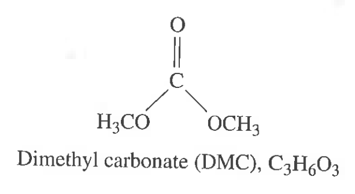
DMC를 만드는 경로는 4가지가 존재한다.
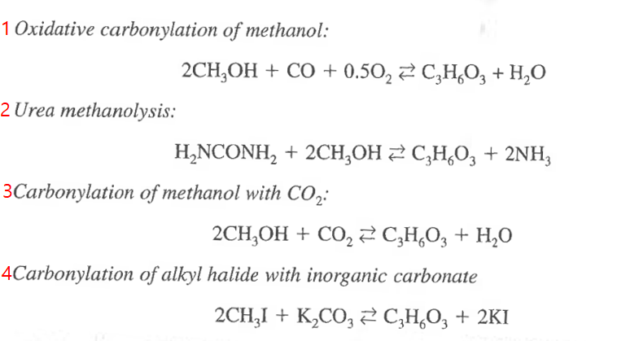
이 중에서 어떤 경로가 좋은지 평가하는 기준은 다음과 같다.
1)비용 2)원자 경제성 3)화학평형 근거
100도에서 500도 사이에서 반응을 시킨다고 가정할 때, 최고의 반응을 꼽아보라.
SOLUTION
일단 비용적인 부분에 근거하기 위해 각 물질의 정보를 찾아야 할 것이다. 원자경제성 평가를 위해 몰질량과 가격이 포함되는 것이 좋을 것이다.
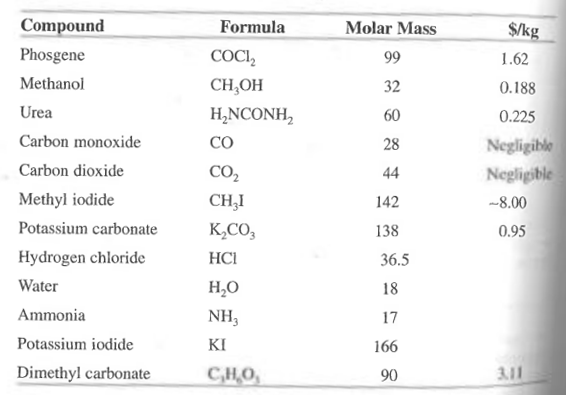
반응이 100%일어난다고 가정하고 각각 계산한 원료의 가격과 원자경제성은 다음과 같다.
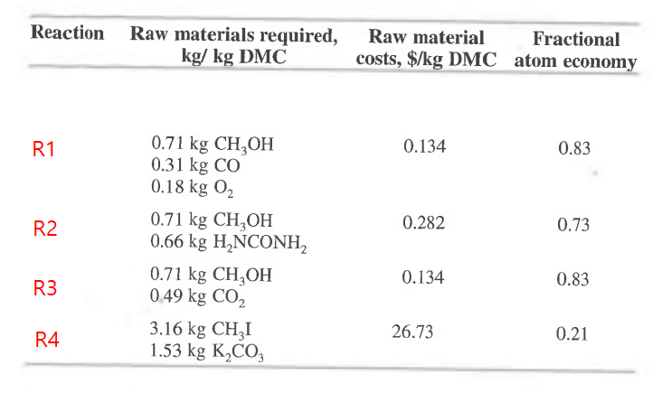
일단 반응 4는 원료값이 너무 많이 든다. 손해이므로 빼자.
반응 1 2 3은 그나마 괜찮다. 하지만 반응1에서 유독가스인 CO가 발생되므로 반응 2 3만이 남게 된다.
하지만 이건 반응이 100%발생하는 걸 가정한 것이다. 따라서 화학평형상수 값이 1 이상인 반응을 찾는게 좋을 것이다.
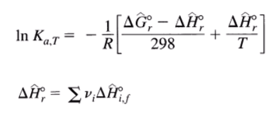 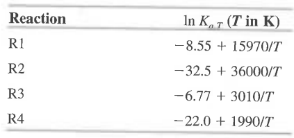
각각을 계산해보면 위와 같다. 이를 그래프로 나타내보자.
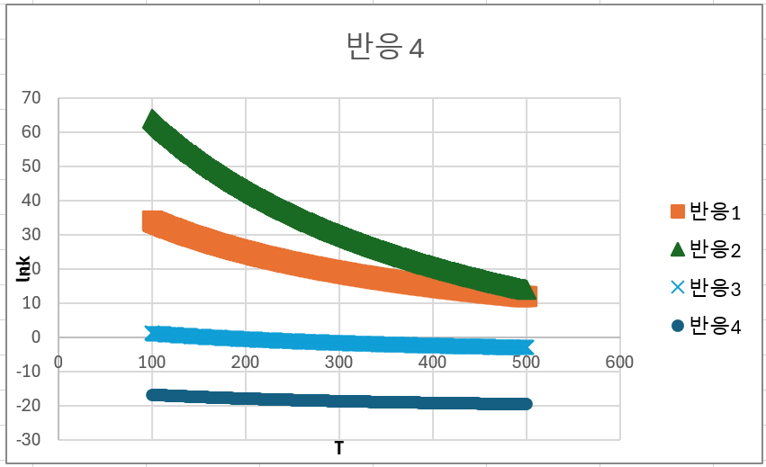
ln K값이 그래도 양수가 나오는건 반응 1과 반응 2이다. 따라서 이 중 안정도가 높은 반응 2를 택한다. 또한 반응은 100도에서 일으키는게 더 좋다는 결과가 나와버린다.
이제 평형 이외에 또 다른 문제점: 부반응, 반응속도, 분리의 용이성이 의사결정의 항목에 들어간다.
화학반응평형과 반응기의 성능
평형상수로 다음의 두 작업을 할 수 있다.
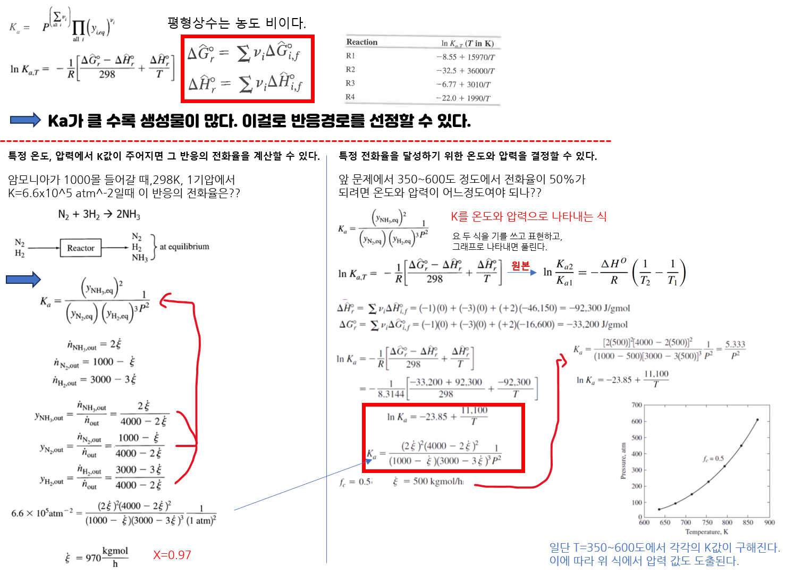